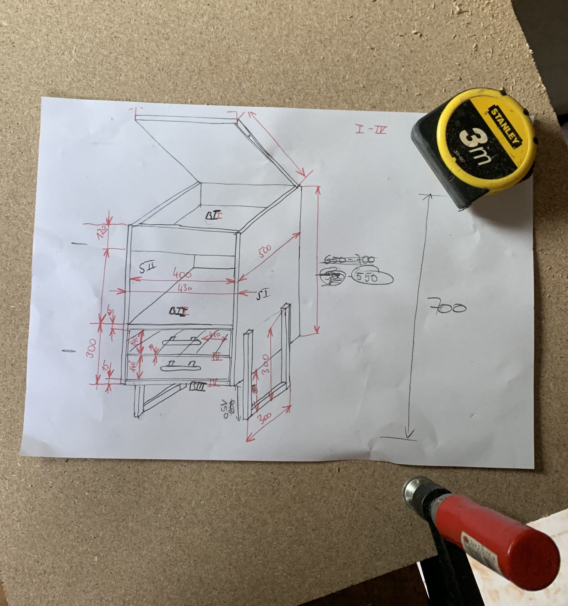
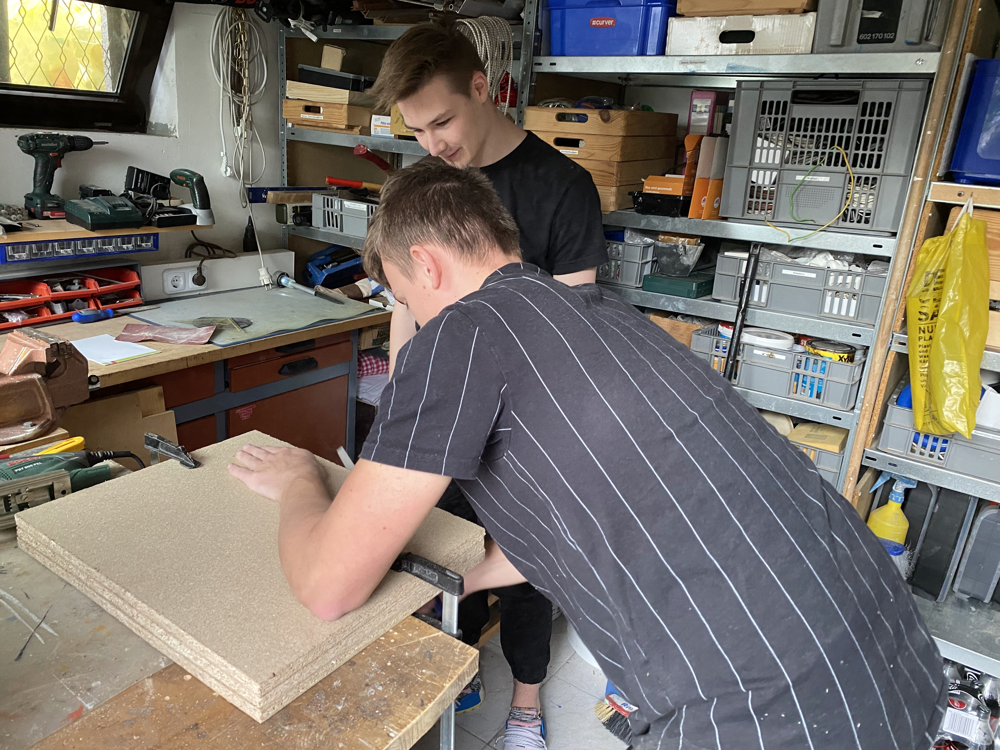

Auf diesem Teil der Webseite erfahren Sie mehr über den Fortschritt und über den Bau des Nightstand Pro
Tag 1 (26.10.2020):
Wir haben uns am 26.10.2020 das erste Mal in unseren Freizeit getroffen um mit der Planung und mit dem Bau des Nighstand Pro's zu beginnen. Als erstes haben wir begonnen mit dem Vermessen des Betts und haben daraufin die Maße von Nightstand Pro aufgeschrieben. Als nächsten haben wir eine Skizze mit den Maßen gemacht.
Als nächstes haben wir damit begonnen unsere Holzreste zu begutachten, welche wir gefunden oder noch zu Hause hatten. Wir habenb schon im Vorhinein und überlegt welches Holz man für welchen teil verwenden kann. Nachdem wir jedes Holz beschriftet hatten und auf dem Plan Eingetragen haben welches Holz wir wofür verwenden haben wir begonnen die Seitenwände zuzuschneiden

Wir haben unsere als Seitenwände gedachte Holzstücke genommen und die Länge und Breite angezeichnet. Danach haben wir mit der Kriesssäge das Stück in die passende Länge und breite geschnitten. Als nächstes habt einer von uns begonnen die Kanten der ersten Seitenwand zu feilen und mit einem Stück Schmirgelpapier die Kanten angerundet. Währendessen hat ein zweiter begonnen die zweite Seitenwand abzumessen und danach auch wieder mit der Kreisssäge zuzuschneiden. Nachdem das erledigt war, haben wir beide Seitenteile übereinander gelegt, und kleine ungenauigkeiten mit der Feile auszubessern, damit am Ende beide Teile die selbe Größe haben.
Der nächste Schritt war es, die Maße von den 3 Flächen abzumessen, die wir für den Boden, das Oberteil und für das einen Fach benötigen. Nachdem wir das erligt hatten, haben wir das Holz wieder Vorbereitet um es zuzuschneiden. Das heißt wir haben wieder mit Bleistift die Maße eingezeichnet. Wir haben wieder mit der Kreisssäge begonnen das erste Teil zuzuschneiden. Nachdem das erledigt war haben wir zur kontrolle nachgemessen und festgestellt das wir uns um einen Zentimeter verschnitten hatten. Daraufhin haben wir dieses Teil neugemacht und auch die fehlenden zwei zugeschnitten.
Als nächstes haben wir wieder die drei Teile übereinander gelegt und auf die selben Maße gefeilt. Nachdem dies erledigt war, war der nächste Schritt das zusammenbauen der Seitwände, des Bodens, des Oberteils und der Zwischenwand. Dafür haben wir mit einer Seitenwand begonnen. In diese haben mit einem kleinen Bohrer Löcher vorgebohrt damit und nachher beim Hineinschrauben nicht das Holz bricht oder aussplittert. Nachdem wir die passenden Stellen ausgemessen haben, haben wir ein bisschen Holzleim hinaufgetan und den Boden hinaugelegt. Danach habebn wir den Boden festgeschraubt. Diese Arbeitschritte haben wir für die andern zwei Holzplatten wiederholt. Zuletzt haben wir die zweite Seitenwand verleimt und verschraubt. Zuletzt haben wir nur noch einen klappbaren Deckel montiert um den mobilen Tisch zu verstauen.
Tag 2 (14.11.2020)
Heute haben wir uns das Zweite Mal getroffen und wollten heute die Beine das Nightstand Pro und die Lade bauen. Begonnen haben wir mit den Beinen.
Für die Beine haben wir ein Vierkant-Stahlrohr verwendet. Dieses haben wir zuerst abgemessen und die benötigten Längen eingezeichnet. Unser Plan war es, anstatt drei Stücke abzuschneiden und dann diese zusammenzuschweißen, eine langes zu nehmen und dieses dann zuerechtzubiegen und dann sicherheitshalber dann noch mit einer Schweißnaht zu verstärken. Um das Metall zu biegen haben wir aus den Rohren 2 Dreiecke hinausgeschnitten um dann das Rohr zu biegen. Nachdem wir dies angezeichnet haben, haben wir diese Dreiecke mit der Flex hinausgeschnitten. Als nächstes haben wir den Grat mit einer Feile entfernt damit man sich nicht verletzt. Diese Schritte haben wir dann nocheinmal wiederholt für den zweiten Fuß.
Nachdem wir die Füße zugeschnitten und gebogen haben wollten wir diese noch an den Ecken verschweißen damit die Füße stabiler sind. Dazu haben wir uns überlegt wie wird das am besten tun. Am Ende haben wir uns dazu entschieden auf die oberseite eine kleine Metallplatte zu legen und diese dann festzuschweißen.